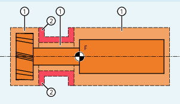

Ein maschinenspezifischer Schutzbereich bzw. dessen Kontur wird mittels der Geometrieachsen definiert, d. h. bezogen auf das Basiskoordinatensystem (BKS) eines Kanals. Damit eine korrekte Schutzbereichsüberwachung in allen Kanälen, in denen der maschinenspezifische Schutzbereich aktiv ist, stattfinden kann, muss das Basiskoordinatensystem (BKS) aller betroffenen Kanäle identisch sein:
Lage des Koordinatenursprungs bezogen auf den Maschinennullpunkt
Orientierung der Koordinatenachsen
Werkzeugbezogene Schutzbereiche
Koordinaten für werkzeugbezogene Schutzbereiche sind absolut, bezogen auf den Werkzeugträgerbezugspunkt F, anzugeben.
Werkstückbezogene Schutzbereiche
Koordinaten für werkstückbezogene Schutzbereiche sind absolut, bezogen auf den Nullpunkt des Basiskoordinatensystems (BKS), anzugeben.
Bei rotationssymmetrischen Schutzbereichen (z. B. Spindelfutter) muss die Gesamtkontur beschrieben werden, nicht nur die Kontur bis zur Drehmitte.
Werkzeugbezogene Schutzbereiche müssen immer konvex sein. Falls ein konkaver Schutzbereich gewünscht ist, ist dieser in mehrere konvexe Schutzbereiche zu zerlegen.
① | Konvexe Schutzbereiche |
② | Konkave Schutzbereiche (nicht zulässig!) |
F | Werkzeugträgerbezugspunkt |
Während der Definition eines Schutzbereichs dürfen folgende Funktionen nicht aktiv sein bzw. verwendet werden:
Werkzeugradiuskorrektur (Fräserradiuskorrektur, Schneidenradiuskorrektur)
Transformation
Referenzpunktanfahren (G74)
Festpunktanfahren (G75)
Verweilzeit (G4)
Satzvorlauf-Stopp (STOPRE)
Programmende (M17, M30)
M-Funktionen: M0, M1, M2